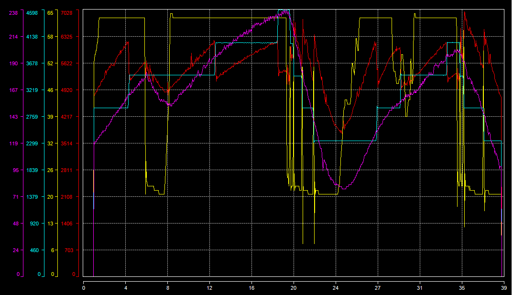
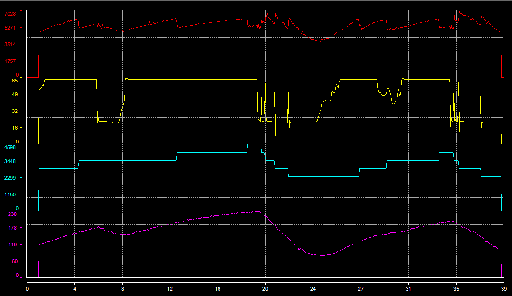

Term 'graphic layout' means the way graphic series (or traces) are set into the graphic.
There are three possible layouts:
If there are four series to plot, each serie will be plotted over 25% of the whole graphic area height. If there are five series, each serie will use 20% of the graphic height, 10% for ten series, so forth and so on...
Series are not necessarily evenly set, a serie can fully or partially overlap one or more series.
Click the 'Graphic layout mode'  button of the tool bar to change the current layout. This command is also available through the 'Graph layout' item of the graphic contextual menu.
button of the tool bar to change the current layout. This command is also available through the 'Graph layout' item of the graphic contextual menu.
Layout mode can also be changed using 'O', 'P' and 'C' shortcut keys for 'Overlay', 'Parallel' and 'Custom' modes.
Graphic in 'Overlay' layout mode:

Graphic in 'Parallel' layout mode:

Graphic in 'Custom' layout mode:

Created with the Personal Edition of HelpNDoc: Easy CHM and documentation editor